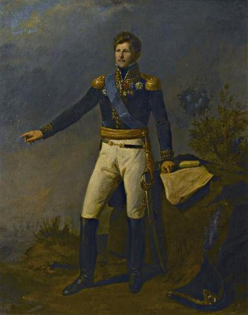
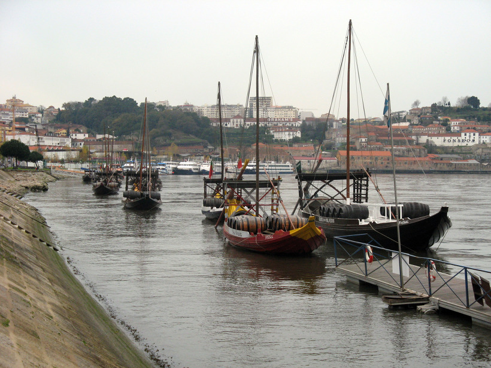
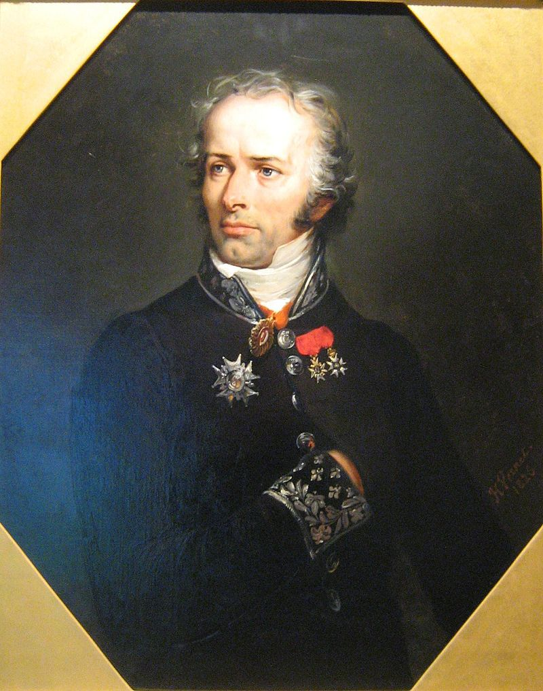
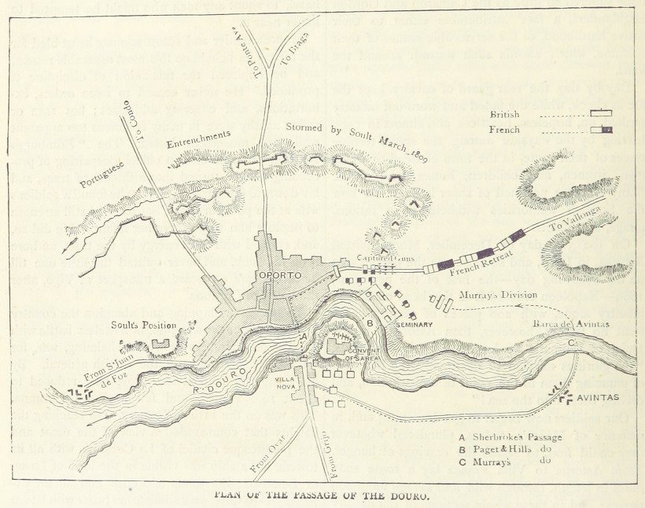
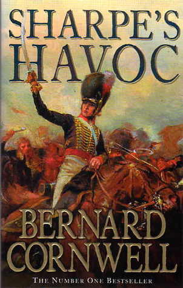

이발사 vs. 원수 - 포르투(Porto) 전투 3편
게시: 2018-02-04T20:35:07+09:00
웰슬리의 영국군이 도우루 강 남안에서 강을 건널 방법을 못 찾고 당황하는 동안, 술트가 그 사실을 모르고 있지는 않았습니다. 5월 10일 도우루 강 남쪽에 있는 그리조(Grijó)라는 작은 마을에서 영국군이 프랑스군을 공격하여 수백명의 사상자를 냈기 때문입니다. 그러나 술트는 비교적 여유를 부리고 있었습니다. 그 자신감은 어디에서 나오는 것이었을까요 ?
그는 나름대로 안전조치를 취해놓고 있었습니다. 포르투가 위치한 도우루 강 하구는 꽤 넓고 깊어서 사람이나 말이 걸어서 건널 수 있는 여울목이 전혀 없었습니다. 따라서 술트는 도우루 강 인근의 모든 바지선과 보트, 조각배들을 모조리 압류하여 북쪽 강변에 끌어다 놓은 상태였습니다. 영국군에게 날개 혹은 지느러미가 없는 이상, 도우루 강을 건너 올 수는 없다고 생각한 것입니다.
다만 술트는 영국 해군을 걱정했습니다. 제해권은 영국에게 있으니, 당장 30km 밖 수평선 너머에 영국 프리깃함들이 호위하는 수송선들이 잔뜩 대기 중일 수도 있었습니다. 술트는 웰슬리가 선박을 이용하여 포르투 북쪽 해안 어딘가에 기습 상륙하는 상황을 우려하고 있었습니다. 그래서 술트는 도우루 강 하구의 산토 조아오 다 포스(S. Joao da Foz) 요새에 수비 병력을 배치했습니다. 그러나 그것만으로는 불충분했습니다. 술트는 전황이 자신에게 불리하며, 따라서 이젠 후퇴를 고려해야 하는 상황이라고 정확히 인식을 하고 있었습니다. 그는 짐을 싸고 있었고 이건 정확한 판단이었습니다. 강남에 영국군이 나타난 5월 10일 다음날인 5월 11일, 술트는 이미 짐마차와 포병대를 메르메(Julien Augustin Joseph Mermet) 장군의 1개 사단과 함께 스페인으로 후퇴시켰습니다.

(메르메 장군입니다. 원래 귀족의 아들이었고, 오슈(Hoche) 장군 밑에서 경력을 쌓았습니다. 나중에 나폴레옹의 백일천하 때는 네 원수가 나폴레옹 편에 서서 군을 지휘하라고 종용했으나 그 명령을 거부하고 부르봉 왕가 편에 섰습니다.)
그러나 술트가 크게 잘못한 것이 있었습니다. 바로 강 남안에 2만이 넘는 영국군이 득실거린다는 사실을 알면서도, 배들을 모조리 북안에 끌어놓았다는 것만 믿고 강변에 경계 병력을 전혀 세워두지 않은 것입니다. 이건 정말 이해가 안 가는 일인데, 술트처럼 수많은 전장에서 잔뼈가 굵은 명장이 이런 기본을 지키지 않았다는 것은 이해가 가지 않는 일입니다. 더군다나 주민들이 프랑스군에게 적대적이라는 것을 뻔히 알면서도 말이지요. 어쩌면 그는 일부 영국군이 건너온다고 하더라도 어차피 보트로 수십 명씩 넘어올 수 밖에 없으므로, 프랑스군이 뒤늦게 그를 알게 되더라도 신속하게 전개하여 아직 수백 명 수준일 영국군을 잽싸게 포위하고 섬멸할 수 있다고 생각한 모양입니다.
정작 영국군은 강변에 도착한지 하루가 지나도록 정말 아무 것도 못하고 발만 구르고 있었습니다. 정말 술트의 생각대로 영국군에겐 강을 건널 방법이 전혀 없는 듯 했습니다. 하지만 세상에 100%라는 것은 없습니다. 5월 12일 아침, 희망을 버리지 않고 강변을 수색 중이던 워터스(John Waters) 대령에게 웬 포르투갈 이발사 하나가 다가 왔습니다. 워터스 대령은 포르투갈어를 할 수 있는 사람이었습니다. 이야기를 해보니 그 이발사는 포르토 시내에서 이발소를 운영하는 사람이었는데 프랑스군의 침공과 약탈을 피해 피난 나왔다가, 강 남쪽에 영국군이 왔다는 것을 알고 2~3인용 낚시배 하나를 저어 건너온 것이었습니다. 물론 그런 낚시배 하나로는 병력을 실어나를 수가 없었습니다. 그러나 이 이발사에겐 결정적인 소식이 있었습니다. 프랑스군이 지키고 있지 않는 강 북안에 와인 수송용 바지(barge)선 몇 척이 있는 곳을 안다는 것이었습니다. 이 이발사와 함께 워터스 대령은 그 조각배를 타고 강 북안으로 넘어갔고 실제로 바지선들과 그걸 지키고 있던 현지 주민들을 발견할 수 있었습니다. 워터스 대령과 이발사는 마침 현장에 있던 신부의 도움을 받아 그 주민들을 설득, 그 바지선들을 끌고 남안으로 끌고 올 수 있었습니다.

(당시 영국군 병사들을 실어날랐을 도우루 강의 와인 수송용 바지선입니다. 저 정도면 한번에 30~40명은 실어나를 수 있겠네요. 바지(barge)선이란 강이나 호수 등 파도가 잔잔한 곳에서 사용되는 평저선을 말하는데, 일반적으로는 돛대나 엔진이 없어 자력으로 항행하지 못하고 다른 배에게 끌려다니는 배를 말하지만 자력 항해를 하는 평저선도 바지선이라고 부릅니다.)
때는 해가 훤히 뜬 대낮이었습니다. 이들이 약 45m 정도 되는 도우루 강을 가로질러 바지선들을 끌고 가는 모습은 양쪽 강변에서 훤히 보였습니다. 그러나 이 배들이 남쪽 강변에 모인 영국군들을 잔뜩 싣고 북안으로 다시 돌아올 때까지 강북의 프랑스군은 이런 사실을 전혀 모르고 있었습니다. 이렇게 아무런 방해도 받지 않고 영국군 1개 중대가 재빨리 강을 건넜고 강변에 있던 수도원 건물을 점령하고는 돌로 된 벽 뒤와 지붕, 창문 등에 병력을 배치했습니다. 상당한 시간이 흐른 다음에야 프랑스군도 영국군이 도강 중이라는 것을 알고 부랴부랴 달려왔을 때는 이미 1개 대대 전체가 수도원에 위치를 잡은 상태였습니다.
아침 11시 30분, 헐레벌떡 달려온 프랑스군의 지휘관은 막시밀리앙 포이(Maximilien Foy) 장군이었습니다. 그는 술트에게 전갈을 보낸 뒤 급한 대로 3개 대대의 보병을 이끌고 달려왔습니다. 프랑스군에게는 3대1의 수적 우위가 있었습니다. 그러나 튼튼한 돌담이 둘러쳐진 수도원은 막강한 요새 역할을 했습니다. 게다가 영국군이 비록 실전 경험이 많지 않은 미숙한 군대라고는 하지만, 막강 프랑스군에 비해 잘하는 것이 하나 있었습니다. 바로 수비전이었습니다.
영국군은 기동성이나 전술적 유연성, 병사들의 자율성이나 인내심, 동기 부여 등 모든 면에서 있어서 나폴레옹의 프랑스군에 비해 떨어지는 군대였습니다. 보통 직업 군인인 모병제 군대가 강제로 끌려온 병사들로 이루어진 징병제 군대보다 전투력이 우수할 것이라고 생각하지만 실제로는 그렇지 않은 경우가 많습니다. 당시 영국군은 그 지휘관인 웰슬리조차 '술 마시러 입대한 땅거지 녀석들'(the scum of the earth, enlisted for drink)이라고 부를 정도로 형편없는 자원들로 구성되어 있었습니다. 민간 사회에서는 먹고 살 방법이 없어서 최후의 수단으로 입대한 빈민층이 대부분이었기 때문입니다. 실제로 영국군에 잉글랜드 출신은 그다지 많지 않았고, 잉글랜드인들과 그 왕 조지 3세를 누구보다 미워하는 아일랜드인들이 전체의 1/3을 차지하고 있었습니다. 또 다른 1/3은 독일인들과 스코틀랜드인으로 되어 있었고, 나머지 1/3 정도만 잉글랜드인이었으나 그마저도 애국심과는 거리가 먼 사회 최하층민들 뿐이었습니다. 당연히 사회 지배 계급이었던 장교들은 자기 부대의 병사들을 신뢰하지 않았고, 당근으로는 럼주를, 채찍으로는 사람 등가죽을 홀랑 벗겨놓는 무지막지한 진짜 채찍질을 휘둘러 병사들을 통제했습니다. 그런 군대에게 다양한 전술을 이해시키고 자율성 및 전술적 유연성을 기대하는 것은 무리였습니다.
그러나 영국군은 프랑스군에 비해 우월한 것이 있었습니다. 돈이 많다보니 전체 유럽 군대 중에서 가장 많은 실탄 사격 훈련을 할 수 있었던 것입니다. 프랑스군은 탄약 뿐만 아니라 머스켓 소총의 부싯돌(flint)을 아끼기 위해 사격 훈련을 할 때 실탄은 커녕 공이치기에 부싯돌 대신 나무조각을 끼워넣고 장탄 및 격발 훈련을 하는 것이 예삿일이었습니다. 그에 비해 영국군은 어지간한 2선 부대들도 실탄 사격 훈련만큼은 상당히 많이 할 수 있었고, 장교들도 병사들에게 다른 것은 기대하지 않고 오로지 그저 빨리 장전해서 빨리 쏘는 것만 강조했습니다. 어차피 저 신뢰할 수 없는 병사들에게 명중률은 기대하지도 않았습니다. 이런 영국군 병사들을 가장 잘 활용할 수 있는 전투가 바로 수비전이었습니다.
실제로 포이 장군의 프랑스군이 수도원을 향해 돌격을 해보니, 빗발처럼 날아드는 영국군 머스켓 소총 세례를 견딜 수가 없었습니다. 결국 포이 자신도 부상을 입은 채 많은 사상자만 남기고 프랑스군은 물러나야 했습니다. 하지만 프랑스군도 여기서 물러설 수가 없었습니다. 그러는 와중에도 영국군은 계속 바지선을 통해 수십 명씩 증원되고 있었으므로, 여기서 물러났다가는 잘못 하면 스페인으로의 후퇴길이 막힐 수도 있었던 것입니다. 프랑스군은 3개 대대를 더 끌고 와서 다시 공격에 나섰습니다. 그러나 이때 즈음 해서는 영국군도 2개 대대가 더 넘어와 3개 대대가 되어 있었습니다. 프랑스군은 이번에도 무의미한 희생만 낸 채 후퇴해야 했습니다.

(이 꽃중년이 막시밀리앙 포이 장군입니다. 그는 정규 군사 교육을 받은 사관학교 출신의 몇 안되는 장군이었습니다. 그는 쥐노의 제1차 포르투갈 침공 때도 참전했고, 웰슬리와 싸운 비메이로 전투에서 부상을 입었습니다. 이번 포르투 전투에서도 웰슬리와 싸워 또 부상을 입었지요. 나중에 술트의 제3차 포르투갈 침공 때도 참전했는데, 웰링턴과 싸운 부사코 전투에서 또 부상을 입었습니다. 나중에 그는 나폴레옹 편에 서서 웰링턴과 싸운 워털루 전투에도 참전했는데, 거기서도 부상을 당했고, 그게 평생 입은 15회의 부상 중 마지막 부상이었다고 합니다.)
이젠 술트도 상황의 심각성을 파악하고 바삐 움직였습니다. 그는 강변 다른 곳에 모아놓은 바지선들을 지키기 위해 배치했던 부대까지 불러 들여 황급히 영국군을 상대하게 했는데. 이것이 더 나쁜 상황을 만들었습니다. 영국군이 쳐들어온 것을 알게 된 포르투 주민들이, 프랑스군이 물러가자마자 바지선들을 몰고 강남으로 넘어와 영국군을 실어나르기 시작한 것입니다.
상황이 이렇게 되자, 술트는 정신을 차렸는지 비로소 정확한 판단을 내리고 과감히 결행합니다. 수도원에 쳐박혀 시시각각 증원되는 영국군을 아랑곳하지 않고, 즉각 북동쪽 스페인 방향으로 후퇴를 시작한 것입니다. 영국군은 총 2만에 가까운 병력으로서 시시각각 증원되고 있는데, 이미 어제부터 철수를 시작했던 프랑스군은 포르투 시내에 고작 1만2천 정도만 남아 있기 때문에, 그렇게 미련을 두지 않고 철수하는 것이 정확한 판단이었습니다.

(포르투 전투 상황도입니다. 저 멀리 동쪽에 머레이 장군의 사단 약 3천이 아빈타스 쪽에서 강을 건넌 것을 보실 수 있는데, 머레이 장군은 자신의 병력만으로는 후퇴하는 술트의 군단을 막아서기 역부족이라고 생각했는지 술트의 앞길을 막아서지 않았습니다.)
웰슬리도 술트 못지 않은 명석한 지휘관이었습니다. 그는 이미 술트가 택할 길은 후퇴 뿐이라는 것을 알고 있었고, 이미 그의 목표를 술트를 단순히 포르투에서 몰아내는 것이 아니라 술트 군단의 격멸로 정해놓고 있었습니다. 웰슬리는 미리 약 1만 규모의 영국군과 포르투갈군을 베레스포드(William Carr Beresford, 1st Viscount Beresford) 장군 지휘 하에 프랑스군의 퇴로를 차단하기 위해 훨씬 더 동쪽의 도우루 강 상류로 보내 거기서 도하한 뒤 프랑스군의 퇴로를 끊도록 해놓았습니다. 웰슬리의 본대도 추격을 하기는 했습니다만, 확실히 프랑스군에 비해 너무나 느렸습니다. 웰슬리의 본대는 결국 술트의 군단을 따라잡지 못했습니다.
술트는 이 제2차 포르투 전투에서 600명의 사상자와 무려 1500명의 포로를 내며 도망치듯 후퇴했습니다. 영국군의 피해는 고작 100여명 수준이었습니다. 그러나 술트가 이렇게 체면이고 뭐고 아랑곳 하지 않고 서둘러 후퇴한 덕분에 프랑스군은 베레스포드의 영국-포르투갈 연합군의 봉쇄에 걸리지 않고 아슬아슬하게 빠져나가 산악지대로 들어갈 수 있었습니다. 대신 술트는 58문의 대포 전체와 군용 금고까지 포기해야 했습니다. 부상자들도 포기해야 했지요. 산악지대로 들어갈 때는 짐마차는 모두 포기해야 했으니까요. 이때의 사건을 소재로 한 버나드 콘월(Bernard Cornwell)의 소설 Sharpe's Havoc에서, 이 장면을 다음과 같이 묘사하고 있습니다.

-------------------------
보병들에게는 배낭과 잡낭에서 식량과 탄약을 제외한 모든 것을 버리고 가라는 명령이 내려졌다. 어떤 장교들은 검열을 실시하여 이번 원정에서 병사들이 얻은 약탈물을 버리도록 강요했다. 부대가 산 위로 올라가는 길 가에 은제 포크와 나이프, 촛대, 접시 등이 버려졌다. 대포와 마차, 탄약 수송차 등을 끌던 말과 황소, 노새는 적의 손에 넘어가지 않도록 모두 사살했다. 짐승들은 울부짖고 몸부림치며 죽어갔다. 걸을 수 없는 부상자들은 짐마차 속에 그대로 남겨졌는데, 곧 그들을 찾아와 복수를 시도할 포르투갈 민간인들로부터 자신의 몸을 지킬 최소한의 시도는 해볼 수 있도록 머스켓 소총도 주어졌다. 술트는 군자금 금고, 즉 은화가 가득한 11개의 커다란 통을 길 가에 세워놓고 지나가는 병사들이 한줌씩 가져갈 수 있도록 했다. 여자들은 치마를 펼쳐 한웅큼 은화를 퍼담고는 병사들과 함께 걸어갔다. 용기병과 경기병, 엽기병들은 말에서 내려 말을 끌고 걸었다. 수천 명의 남자들과 여자들이 황량한 언덕을 기어오르고 있었고, 그 뒤로는 와인과 포트 와인, 교회에서 약탈한 황금 십자가와 북부 포르투갈의 대저택에서 훔친 오래된 그림들이 실린 짐마차들이 버려져 있었다.
-------------------------
하지만 술트와 프랑스군의 고생과 위기는 이제부터 시작이었습니다. 프랑스군이 점령지역인 스페인으로 가기 위해서는 이제부터 험난한 산악지대를 통과해야 했는데, 곳곳에서 험한 협곡과 그 위를 아슬아슬하게 걸쳐진 허술한 다리들을 건너야 했습니다. 그런데 그런 산악 지대는 포르투갈 민병대인 오르데난사(Ordenança)들이 점거하고 있었습니다. 까마득한 계곡 위에 걸린 좁고 허술한 다리 너머를 한줌의 포르투갈 민병대가 지키고 있다면 아무리 프랑스군이 대군이라고 해도 건널 수가 없었습니다. 그렇게 프랑스군의 발이 묶인 사이, 느리긴 해도 나름대로 서둘러 웰슬리의 영국군이 쫓아오고 있었습니다.
술트와 그의 군단은 결국 이렇게 포르투갈 산골짜기에서 최후를 맞이해야 했을까요 ? 아니라는 것을 아실 겁니다. 술트 군단 전체가 전멸의 위기에서 탈출할 수 있었던 것은 그야말로 용감무쌍한 한 남자 덕분이었습니다. 그 이야기는 다음 편에...